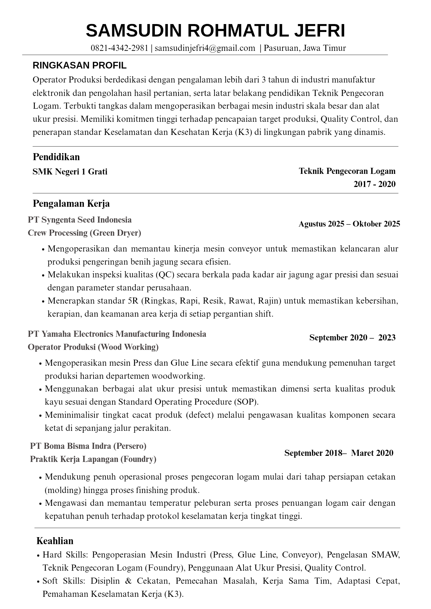
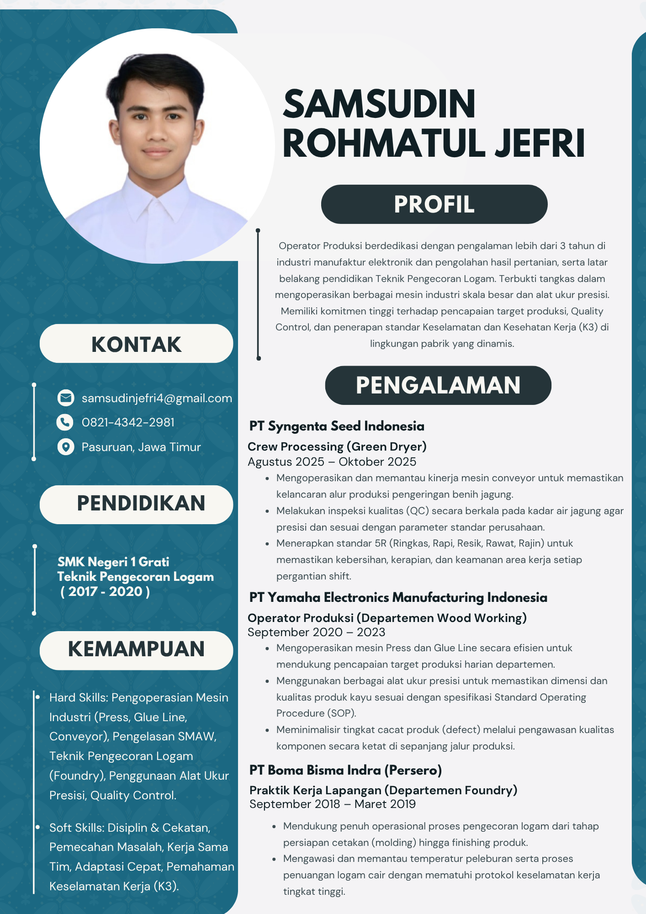
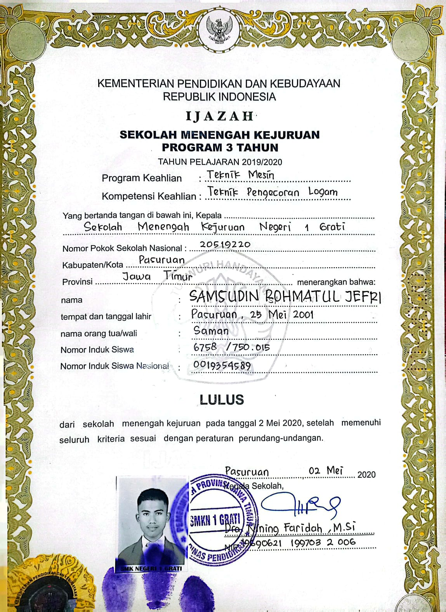
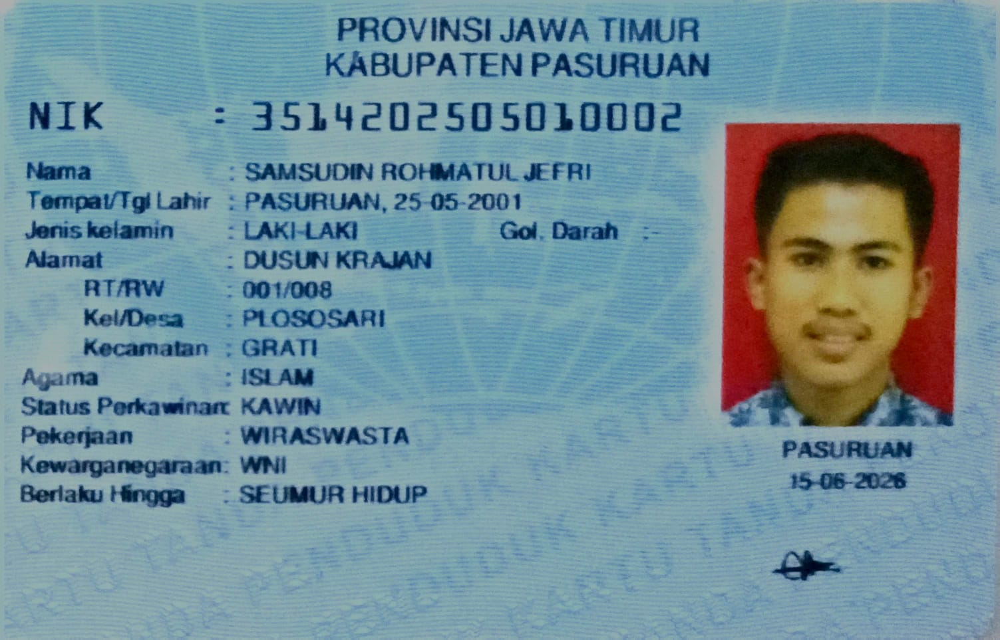
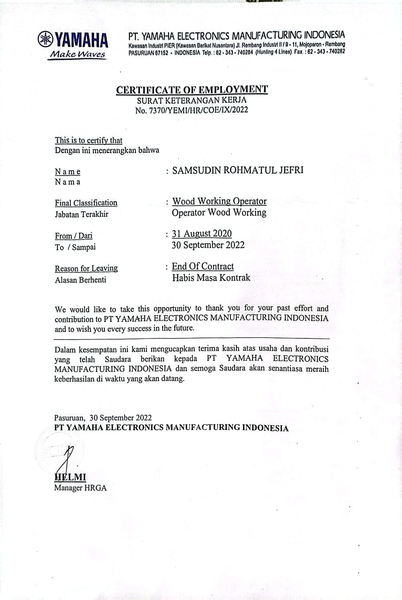
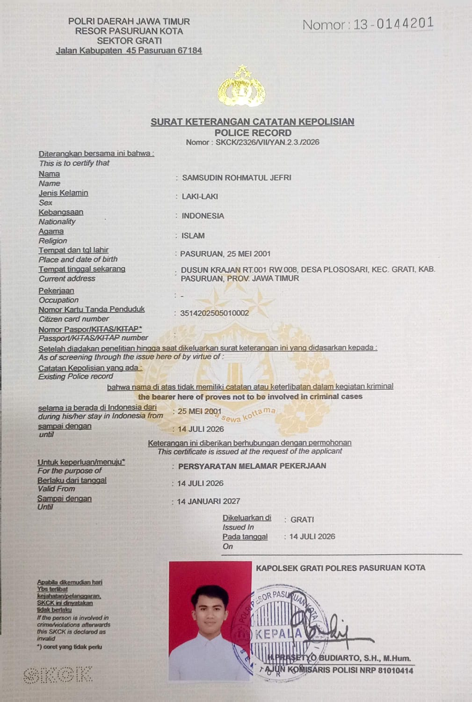

Cara Unduh: Klik tombol, lalu pilih "Save as PDF". File akan otomatis tergabung lengkap: Surat Lamaran, CV, KTP, Ijazah, Paklaring, dan SKCK.
Hal: Lamaran Pekerjaan – Operator Produksi
Lampiran: 6 (Enam) Berkas
Yth. Bapak/Ibu HRD [Nama Perusahaan]
Di Tempat
Dengan hormat,
Berdasarkan informasi lowongan pekerjaan yang saya terima, melalui surat ini saya bermaksud melamar posisi Operator Produksi di [Nama Perusahaan]. Berikut adalah data diri singkat saya:
| Nama | : | Samsudin Rohmatul Jefri |
| Pendidikan | : | SMK Negeri 1 Grati – Teknik Pengecoran Logam |
| Status Nikah | : | Menikah |
| Alamat | : | Dsn. Krajan RT 001/RW 008, Desa Plososari, Kec. Grati, Kab. Pasuruan, Jawa Timur |
| No. Telp | : | 0821 4342 2981 |
Saya adalah individu yang disiplin, cekatan, dan memiliki ketahanan fisik prima untuk bekerja dengan target harian di lingkungan pabrik. Saya menaruh minat besar pada proses manufaktur, serta memiliki pemahaman yang kuat terkait standar Keselamatan dan Kesehatan Kerja (K3) dan penerapan budaya 5R di area kerja.
Sebagai informasi, saya memiliki pengalaman lebih dari 3 tahun di industri manufaktur (PT Yamaha Electronics Manufacturing Indonesia dan PT Syngenta Seed Indonesia). Pengalaman ini melatih saya untuk tangkas mengoperasikan mesin produksi skala besar (seperti mesin Press, Glue Line, dan Conveyor), serta cermat melakukan Quality Control (QC) presisi guna memastikan standar zero defect.
Sebagai bahan pertimbangan Bapak/Ibu, saya turut melampirkan:
Besar harapan saya untuk dapat mengikuti tahapan wawancara agar saya bisa menjelaskan lebih detail mengenai kualifikasi saya. Atas waktu dan perhatian Bapak/Ibu, saya ucapkan terima kasih.
Hormat saya,
Samsudin Rohmatul Jefri





